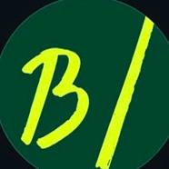
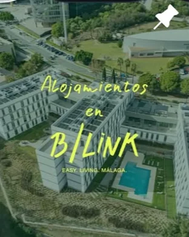
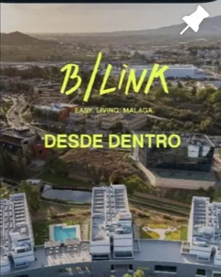
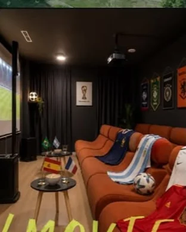
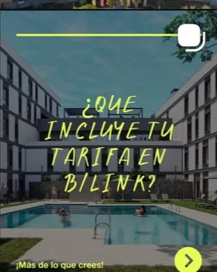
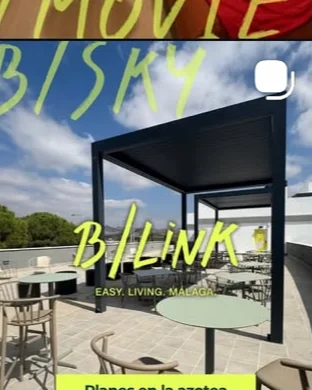
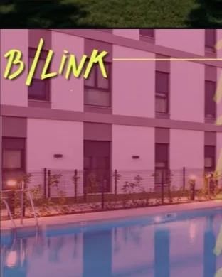

todo el trabajoall work


Redes sociales · Contenido
B/Link Málaga
B/Link Málaga
MetricoolCanvaIllustrator

74postsposts
160seguidoresfollowers
98seguidosfollowing
B/Link Málaga
Sector inmobiliario
EASY. LIVING. MÁLAGA — en el corazón de Málaga TechPark. Alojamientos diseñados para tu estilo de vida.
www.blinkmalaga.com
Sector inmobiliario
EASY. LIVING. MÁLAGA — en el corazón de Málaga TechPark. Alojamientos diseñados para tu estilo de vida.
www.blinkmalaga.com
FlexLivingEventosEspaciosFAQsMálaga
▦▷♡






@blink_malaga
- El reto
- The challenge
- Dar a B/Link una presencia constante y muy reconocible en Instagram, con una línea propia que destacara en el feed.
- Give B/Link a constant, highly recognisable Instagram presence, with a visual line that stands out in the feed.
- El proceso
- The process
- Sistema de plantillas, calendario de contenidos y publicación gestionada con Metricool, midiendo qué funciona.
- A template system, content calendar and publishing managed with Metricool, measuring what works.
- El resultado
- The result
- Un feed coherente de un vistazo y una comunidad que crece de forma sostenida.
- A feed that's coherent at a glance and a steadily growing community.
160seguidores en InstagramInstagram followers
10/mespublicaciones de mediaavg. posts per month
54,2%engagement (Metricool) · +6,36% el último mesengagement (Metricool) · +6.36% last month